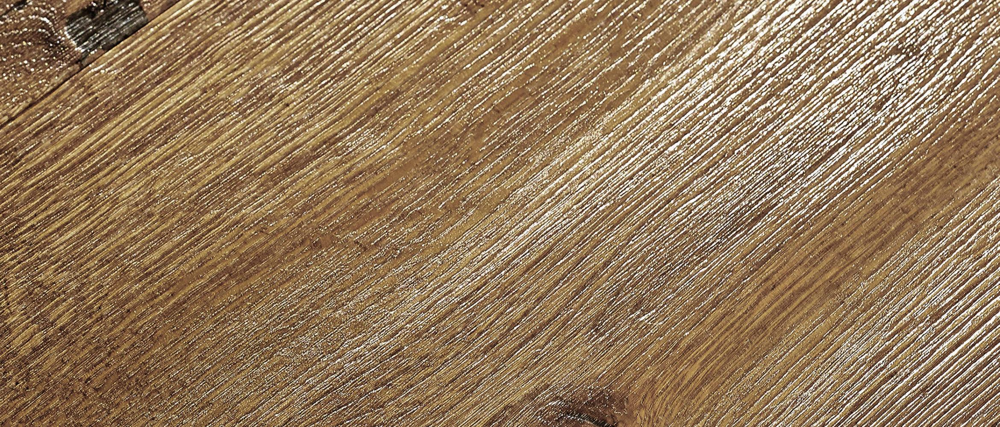

Parkett- und Dielenböden

Allgemeines
Parkett- und Dielenböden leben von ihrer Natürlichkeit. Sie sorgen für ein angenehmes Raumklima und eine tolle Haptik. Parkett- und Dielenböden garantieren eine lange Lebensdauer, sind strapazierfähig und können bei starker Nutzung abgeschliffen werden. Alle Parkett- und Dielenböden sind pflegeleicht und bringen jahrelang Freude.
Die richtige Wahl
Holzböden sind nicht gleich Holzböden. Neben der Holzart, den optischen Ansprüchen an die Sortierung und der Stärke der Deckschicht spielen insbesondere die Qualität der Verbindung und die Oberflächenveredlung eine wichtige Rolle. Bei Parkett- und Dielenböden haben Sie die Wahl zwischen der natürlichen Öl-Oberfläche und den mehrschichtig aufgebauten Lack-Versiegelungen (in seidenglanz oder seidenmatt). Ob man sich für lackiertes oder geöltes Parkett entscheidet , ist (fast) reine Geschmackssache.
Werterhaltung
Parkett- Dielenböden lassen sich dank fertig veredelter Oberflächen einfach reinigen und pflegen. Für Langlebigkeit und dauernde Freude an einem Holzboden, sollten folgende Hinweise zur Werterhaltung unbedingt beachtet werden!
Eine relative Raumluftfeuchte von 40 – 65 % sind im Jahresverlauf für jeden Holzboden und auch für das Wohlbefinden des Menschen empfehlenswert. Die Raumluftfeuchte sollte daher regelmäßig mit Hilfe eines Hygrometers ermittelt und überwacht werden.
Wie bei allen anderen Bodenbelägen auch, sollten Sie Ihren Parkett- und Dielenboden vor Schmutzpartikeln durch entsprechende Schmutzfangzonen (Matten) schützen. Zum Schutz des Holzes gegen Kratzer müssen unter Stuhlfüßen, Tischfüßen sowie unter Möbelstücken in jedem Fall passende, weiche Filzgleiter montiert werden. Rollen von Bürostühlen, Aktenwagen und Rollcontainern sind mit weichen Laufflächen/Rollen auszustatten.
Desweiteren besteht die Möglichkeit, den Boden in diesen stark beanspruchten Bereichen durch entsprechende Bodenschutzmatten zu schützen. Eine regelmäßige Trockenreinigung des Holzbodens mit dem Staubsauger (aufgestellte Bürsten) oder dem Besen wird empfohlen. Eine nebelfeuchte Reinigung sollte nur bei hartnäckigen Verschmutzungen erfolgen. Wichtig dabei ist, dass der Wischer gut ausgewrungen ist und keine Pfützen mit stehendem Wasser entstehen.
Metallische Möbel und Gegenstände bedürfen einer Schutzmatte (Gefahr von Oxidationen aufgrund von Holzinhaltsstoffen – speziell bei Holzart Eiche). Keine weichermacherhaltigen Materialien z. B. aus Gummi oder Kautschuk direkt auf den Boden stellen.